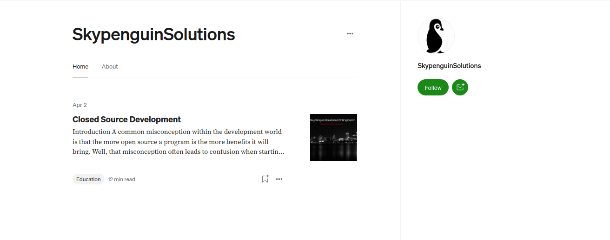

On my medium, my article count is roughly 50 articles of knowledge deep and they are all free of charge
I firmly believe that everyone should have access to knowledge especially unique information without the
ability of paying hundreds or even thousands and medium is the place I do it! Having working with teams and
complete shadow titans, I noticed that the best type of knowledge and educators do it for the better of humanity
and will not make a charge or put a price tag on the limitations of knowledge! My medium page is extremely active
and always in some shape or form diverse and unique in its own way!
Blogger Page
About My Page
This blogger page is something I was invited to a while back and will be using much more frequently.
Here we talk all tech, all tools, all news in the industry and so on from there! You may recongnize a few articles there!
SkyPenguin-Labs Medium Page

About My Page
This is the offical medium page for SkyPenguin-Labs and is where I will be posting content related to tools
or frameworks and general research done under SkyPenguin Labs!